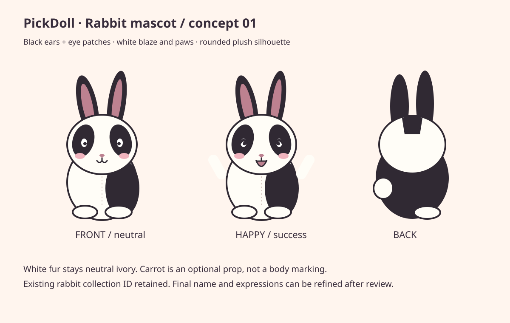
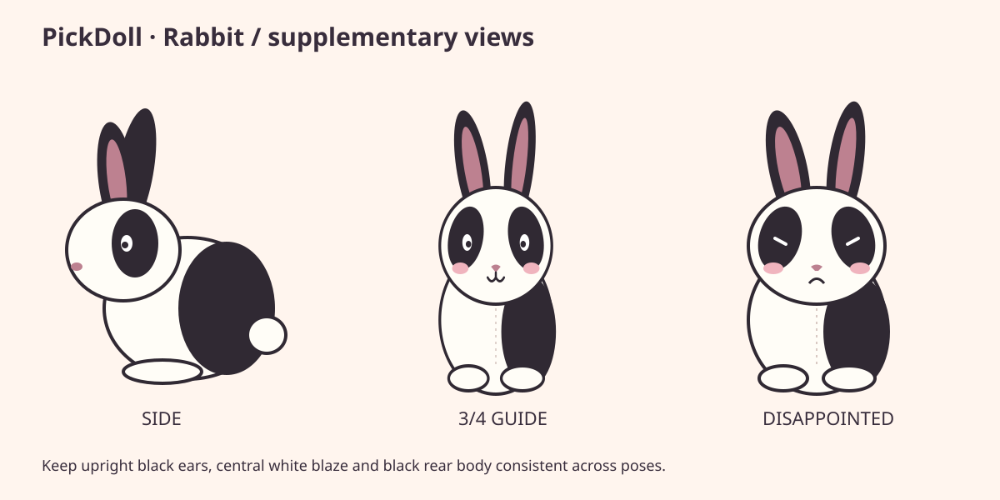
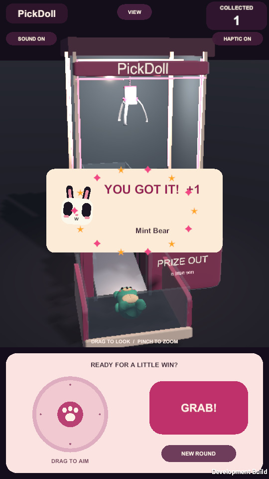
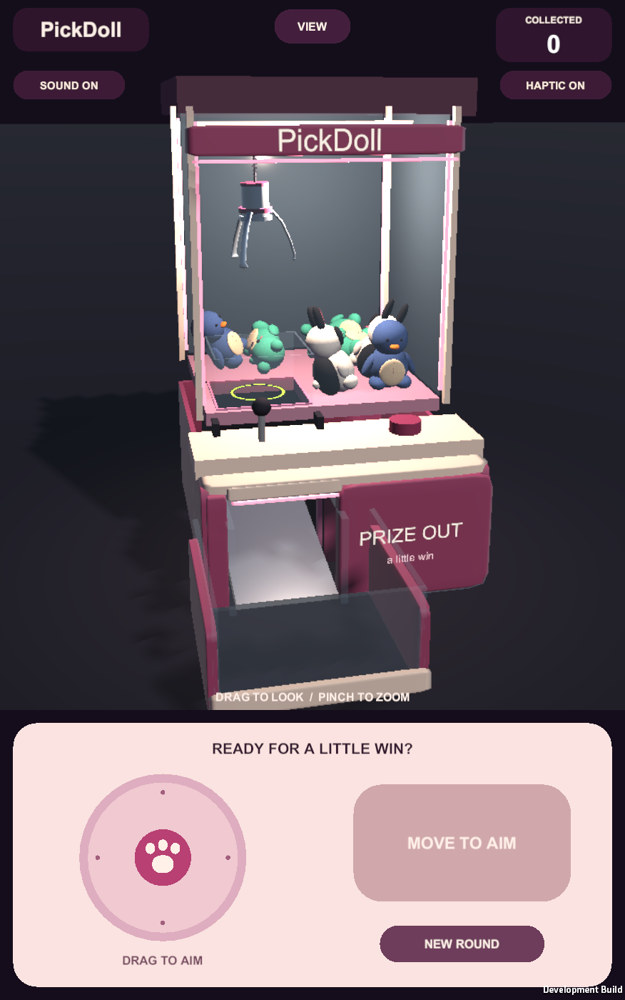
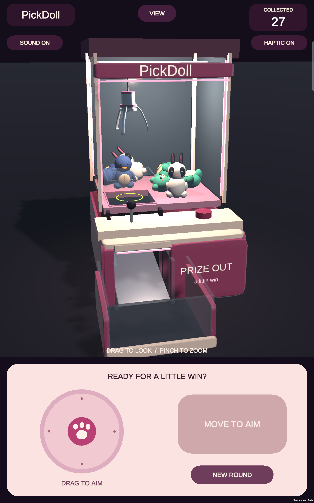

2026년 11월 25일 · 상태: 구현·빌드·검증 진행 중 / 완료 보고 아님
사진 속 검은 귀·눈 주변 무늬·뒤쪽 몸과 흰 얼굴 중앙·가슴·발을 살린 카툰 시안을 제시했고, 사용자가 “이 방향으로 진행”으로 승인했다. 이름은 임시 Patch Bunny이며 수집 ID rabbit은 유지한다. 실제 토끼 원본 사진은 로컬 참고 자료로 보존한다.


Windows 통합 검사 PASS. 곰·토끼·펭귄의 선 자세·누운 자세 실제 집기·자동 복귀·배출 6/6 성공. 총 획득 10건·효과 10회 일치, 중복 접촉·효과 재호출·새 판·저장 재읽기 검사 통과. 받침대 가장자리 바닥 접촉 집계와 경사로·입구 단독 미집계 통과. 반대 원형 입력의 yaw −6.99° / +8.06°, 정지 후 회전 속도 감소 확인. 452×1158·876×1400 UI 검사 PASS.
Android 0.10.0(code 12, ARM64, 최소 API 26) APK 빌드·v2 서명 검증 완료. 갤럭시 탭 SM-X820 업데이트 설치·실행·시작 화면 확인. 기존 수집 기록 27개를 업데이트 전후 비교했고 누락 0건을 확인했다. 진동 하드웨어 정보는 amplitude control 기능을 표시하지 않으므로 펄스 강도의 실제 차이와 사용자 체감은 따로 확인한다. 실제 성공 플레이·진동 체감의 사용자 품평은 대기 중이다. 기존 AssetPackManager 클래스 부재 시작 로그는 재현되며 게임은 계속 실행된다. 출시 전 정리 과제로 유지한다.



기존 Unity PackageManager 설정의 로컬 변경은 이번 작업과 별도로 보존한다.
사용자가 실물 인형의 정면·측면 사진 8장을 제공하고 다음 차수 적용을 요청했다. 옷 입은 갈색 동물·당근 토끼·납작한 쿠션형·큰 눈 고양이의 신규 4종을 11주차 도감 작업과 함께 배정했다. 현재 10주차 실행 버전은 유지한다.
2026년 11월 25일 사용자 보고: 토끼가 토출구 위에 걸려 있다가 다음 인형을 떨어뜨리자 두 개가 함께 내려왔는데 COLLECTED는 1만 증가했다. 후속 확인에서 사용자는 “하나는 출구에 걸쳐 있었어”라고 설명했다. 두 개 모두 수령 완료됐다고 단정할 수 없으며, 걸친 인형의 최종 바닥 접촉 여부는 확인되지 않았다. 바닥 미접촉이면 1개 집계가 현재 기준에 맞고, 바닥 접촉 후 미집계라면 누락이다. 집계 버그 확정이나 수정 완료로 기록하지 않는다.
확인할 조건: 두 인형이 모두 최종 받침대에 도착했는지, 위에 쌓인 인형의 직접 바닥 접촉 누락인지, 각 인형의 입구 통과 기록·고유 획득 ID·저장 성공·효과 수가 일치하는지. 토출구 걸림 자체의 형상·소품·귀 접촉도 별도로 확인한다. 탭이 현재 ADB에 연결돼 있지 않아 해당 실행 로그는 확보하지 못했다.
재현 및 회귀 항목: 토끼 정체 → 다음 인형 충돌 → 2개 동시 배출, 받침대에서 겹쳐 정지, 시간차 도착, 반복 접촉·새 판·재실행. 실제 도착한 인형마다 각 1회씩 저장·집계·효과가 발생해야 하며 경사로에 아직 걸린 인형은 조기 집계하지 않는다.